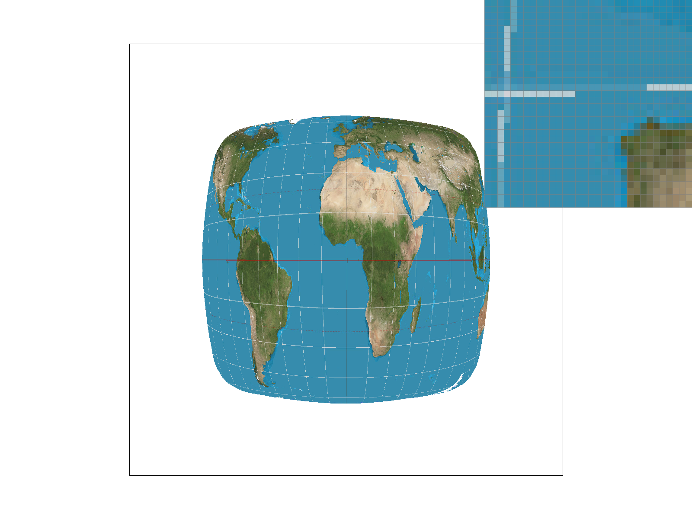
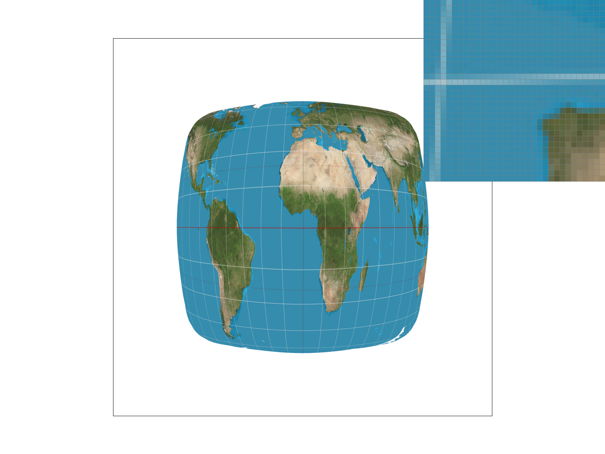
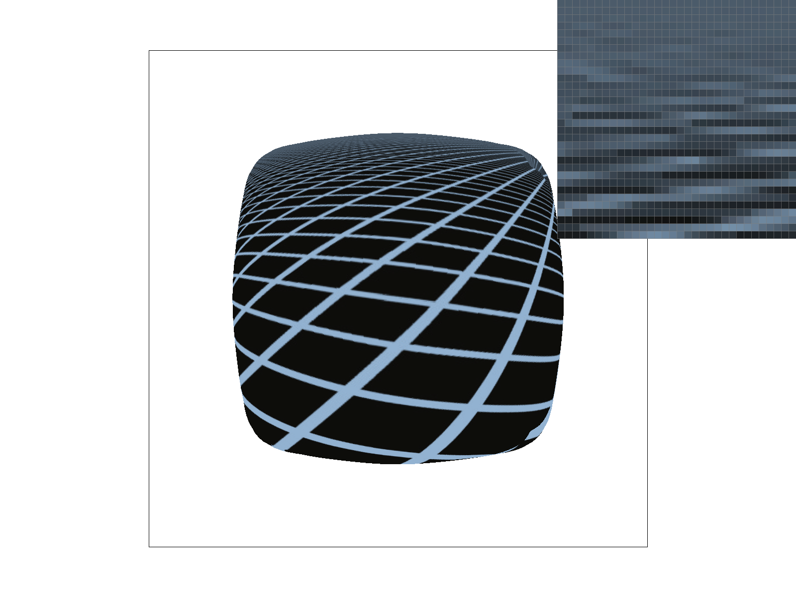
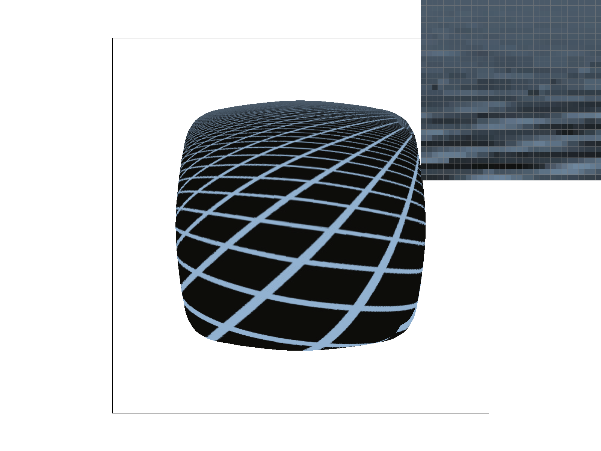

Overview
In Project 1: Rasterizer, I built a renderer that rasterizes simplified SVG's via nearest pixel sampling and supersampling in triangles. Additionally, this rasterizer supports transforms performed on images in 2D space such as translations, rotations, and scaling. Finally, it is also able to take textures a texture space and map them into the screen space via nearest-neighbor or bilinear sampling and utilizing different mipmap levels. During this project, I learned how big of an issue aliasing is when rasterizing images of varying resolution and explored the intricacies of different antialiasing techniques each with their respective tradeoffs and scenarios they should be deployed.
Section I: Rasterization
Part 1: Rasterizing single-color triangles
The process of rasterizing a triangle can be broken up in several steps:
1. Find the coordinates of the smallest rectangle that captures the triangle in its entirety. This rectangle is also known as the "bounding box" of the triangle.
2. Iterate over each pixel inside the bounding box and proceed to write the color of that pixel/triangle into the sample buffer if the center of the pixel lies inside the triangle. The center of the pixel lies inside the triangle if it passes the three line test.
3. Finally, resolve the colors saved into the sample buffer into the frame buffer.
My implementation proves to be no worse than an algorithm that checks each sample within the bounding box of the triangle because I use the min and max of all x and y coordinates of the triangles vertices to determine the vertices of my bounding box. This creates the tightest rectangle possible around the triangle. I only sample points within that bounding box, thus my algorithm is at least as efficient.
Below is an example of a simple triangle rasterization with a sample rate of 1.

Part 2: Antialiasing triangles
The process of supersampling is similar to the process of rasterizing a single-color triangles except we will be sampling multiple areas within a pixel and averaging those colors as opposed to just sampling the center of a pixel. In more detail:
1. Iterate over all pixels within the bounding box of the triangle.
2. At each pixel, iterate a factor of "sample_rate" more times to sample "sample_rate" number of equidistant points inside the pixel. If the point within the pixel lies within the triangle, write it to the sample buffer.
3. At the end of sampling, resolve the sample buffer to the frame buffer by averaging each of those super sampled points per pixel from the sample buffer and writing that color to the rgb frame buffer.
The sample buffer will be setup such that the number of elements in each row of the sample buffer will be multiplied by the sample rate, so every consecutive "sample_rate" number of elements in the buffer will correspond to the super samples for a single pixel. Thus the total size of the sample buffer will be height * (width * sample_rate). The sample buffer is a 1D array in memory, however it can be visualized and used as a 2D array by this indexing scheme: sample_buffer[y * width * sample_rate + x]. Where y is your column index and x is your row index. With this 2D visualization in mind, every consecutive "sample_rate" number of elements per row represents the super samples of a single pixel.
In order to accomodate for supersampling, the sample_buffer size at initialization and indexing was tweaked to scaled based off sample rate. This affected areas such as RasterizerImp::sample_buffer, RasterizerImp::set_sample_rate(), RasterizerImp::set_framebuffer_target(), and RasterizerImp::fill_pixel() in rasterizer.h/cpp. Finally, RasterizerImp::resolve_to_framebuffer() was changed to average the colors of every "sample_rate" number of samples inside the sample buffer and write that averaged color into the rgb frame buffer.
Supersampling is particularly great for antialiasing in the cases where parts of the triangle occupy only a portion of the pixel's area, however not entirely on the pixel. Supersampling gives a pixel more locations to sample a color from and averages the colors so the intensity will scaled based off how many sample points of the pixel are within the triangle.
The following images show the effects of supersampling near a sharp corner of a triangle.
Part 3: Transforms
Section II: Sampling
Part 4: Barycentric coordinates
Barycentric coordinates provide a way to smoothly translate values defined at vertices to other values at other vertices for pixels or points inside a triangle. For example, this value could be color. If the three vertices have color red, green, and blue respectively, then a pixel closer to a red vertex would have a greater weight of red in its rgb than green and blue. Furthermore, if the pixel were equidistant from the verticies (the pixel is located at the center of the triangle), then the pixel would have equal parts red, green, and blue as its rgb makeup.
Below is an example of a triangle with red, green, and blue values at each of its verticies. Color is interpolated throughout the entire triangle using barycentric weights.
Part 5: "Pixel sampling" for texture mapping
At a high level, pixel sampling is done by having two triangles respectively defind in screen coordinates and texture coordinates. Then, sampling the texture can be accomplished by using barycentric coordinates to convert between screen space to texture space in order to extract a color from the texture space that maps to the screen space. Points from screen space to texture space and vice-versa are bijective, thus there will always be a unique mapping from screen a coordinate to a texture coordinate. In this project, two different texture sampling methods were implemented, nearest and bilinear sampling. Different sampling methods are considered because mapped coordinates to texture space are not always 1:1 due to different resolutions of screen space and texture space.
Nearest sampling is done by sampling the rgb value of the closest pixel in texture space after converting to texture space coordinates. This can be done by rounding the coordinate values to the closest pixel.
Bilinear sampling is done by taking the 4 closest pixels to the converted texture space coordinate and interpolating the color of those 4 pixels with weights varying based off the distance of the converted texture space coordinate to the 4 closest points.
Below is an example of the differences between nearest and bilinear sampling with varying sample rates.
|

|

|
|
|

|
Artifacts of nearest sampling with a sample rate of 1 are apparent on the longitudinal and latitudinal lines where they seem disconnected or very faint. When super sampled at a rate of 16, the lines on the entire map are much more apparent and well defined.
When using bilinear sampling at a sample rate of 1, we can see that some of the disconnected or faded lines are bolder in some areas, which is a visible improvement from nearest sampling at the same rate. Finally, with bilinear sampling at a sample rate of 16, you can see that it provides the most consistent color and consistency to the lines in the close up and across the entire image.
Generally there will be a large difference between these two sampling methods when the texture resolution is a different size than the screen resolution. For example, if the texture resolution is bigger than the screen resolution, the screen resolution will need a way to summarize the colors of multiple pixels from the texture resolution since the texture has more pixels than the screen. Bilinear interpolation will prove useful here as it uses information from 4 pixels from texture space to represent a single color on the screen. In a way, it could be viewed that bilinear sampling provides a more generalized summary of the texture whereas nearest sampling gives snippets of the texture onto screen space.
Part 6: "Level sampling" with mipmaps for texture mapping
At a high level, level sampling is sampling from varying resolutions of textures for different parts of screen space in order to reduce aliasing, namely the Moire pattern. This is done by precomputing textures at varying scaled-down resolutions and storing them in memory, ready to be sampled upon given the appropriate situation. These precomputed resolutions of a texture are called mipmaps. Typically, parts of images that appear closer up to the viewer will be sampled from a lower level mipmap, where a low mipmap level corresponds to a higher resolution (level 0 mipmap = resolution of original texture). Conversely, scenes perceived as far away (or stretched out) in the image will sample from a high level mipmap, or a lower resolution version of the original texture.
I implemented in texture mapping by first doing a point in-triangle check for my sample location in screen space then converting that coordinate normalized to texture space. Then, calculate the appropriate mipmap level and scale back up the normalized texture space coordinates based off the texture resolution and sample from the texture with the desired sampling method. Which mipmap level to use can be approximated by calculating the log of the max of displacement vectors in uv space.
Now that we've went over different methods of pixel sampling, level sampling, and number of samples per pixel, we can analyze the tradeoffs of these three techniques.
Nearest pixel sampling is the simplest sampling technique as it will only sample one location per pixel when rasterizing images. As a result this sampling method is a hit or miss, because a triangle's area could occupy a pixel's area, however not come in contact with the sample point in the pixel, thus causing aliasing. In terms of cost, it is the baseline of computation with the sampling algorithm taking O(n * m) time to run and memory in the sample buffer where n = height of screen resolution and m = width of screen resolution.
Supersampling or sampling more locations per pixels is a strong techinique to decrease aliasing because more sample points are introduced however, is quite costly memory wise and efficiency wise as it will increase both of these costs by a multiplicative factor of the super sample rate. The sample buffer size and runtime of the sampling algorithm are increased as a result. This works out to be O(n * m * sample_rate) runtime and memory requirement.
Bilinear sampling is a method of summarizing pixel colors for 4 pixels in texture space into screen space which is particularly useful for mismatching resolutions between the screen and texture. The cost of this operation is similar to that of nearest pixel sampling, however additional computation will be needed to interpolate the four neighboring pixels (3 lerps).
Finally, level sampling is a great way to decreasing aliasing for streched out or far away scenes in images. It helps reduce the Moire pattern which is commonly found in the said images. Storing a mipmap of a texture requires 1/3 additional memory of the original texture. However, computing them does not take long as it only takes a log based factor to compute the actual mipmaps and takes a simple derivative computation to determine which mipmap to sample from during sampling.
Below are examples of level 0 and nearest level with nearest pixel and bilinear sampling (All sample rate of 1).
|

|

|
|

|
|
Section III: Art Competition
If you are not participating in the optional art competition, don't worry about this section!